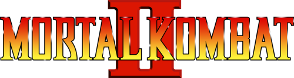

Codes
Arcade | Super Nintendo | Genesis | 32X
Saturn | Game Gear | Game Boy | PC
Arcade:
(Most Arcade codes are compatible with most other versions of MKII)
EJB Menu:
The EJB Menu is an alternate test menu that can be accessed through this button code in attract mode:
P1-
Diagnostic Tests
Coin Bookkeeping
Game Audits
Volume Adjust
Hello
Enter Initials
Character Endings
Top 15 Players:
During attract mode:
(
Random Select:
At select screen, press:
(
Disable Throws:
When the VS screen comes up:
(
Dead Pool Trick:
As the skeleton comes up from the acid:
(
Kombat Tomb Trick:
Right after sending your opponent to the spikes in the Kombat Tomb Stage Fatality:
(
Your opponent will slide right off!
Fight Smoke:
Play in a 1 or 2 player mode until you reach the Portal.
When you do, uppercut your opponent until you see Dan Forden and hear "Toasty."
Quickly press (
Fight Jade:
Fight your way up the tournament until you reach the fighter just under the question mark.
Defeat the opponent only using
You will go to Goro's Lair to fight Jade.
Fight Noob Saibot:
Get 50 wins in a row to travel to Goro's Lair and fight against Noob Saibot.
(25 wins on Sega Genesis and 32X, however 50 wins on Sega Saturn)
Play Pong:
Fight in VS mode for 250 times. You will play against your opponent in Pong.
Return to Top
Beat up the Logo:
When you turn on the SNES:
(
Watch Shao Kahn and Kintaro beat up the Acclaim logo.
Elimination Mode:
At the main menu:
(
This code will enable an 8-player elimination mode.
30 Credits:
At the Character Select Screen, press:
If you did it right you'll hear a gong sound.
Super Damage:
At the Character Select Screen, press:
This code will enable a mode in which every hit does much more damage to your opponent than normal.
Extended Fatality Time:
At the Character Select Screen, press:
This code will give you 4 times as much time to enter a Fatality movement.
Fight Noob Saibot (The Easy Way):
At the Character Select Screen, press:
This code will take you straight to fight the ominous secret character, Noob Saibot.
Fight Jade (The Easy Way):
At the Character Select Screen, press:
This code will take you straight to fight the deadly female ninja, Jade.
Fight Smoke (The Easy Way):
At the Character Select Screen, press:
This code will take you straight to fight the elusive male ninja, Smoke.
Fight Kintaro (The Easy Way):
At the Character Select Screen, press:
This code will take you straight to fight Kintaro.
Fight Shao Kahn (The Easy Way):
At the Character Select Screen, press:
This code will take you straight to fight Shao Kahn.
Return to Top
Test Mode Debug Code:
To access the debug menu, go to the Start/Options screen and select the Options menu.
Put the cursor on "Done!!" and press:
A new entry in the Options menu called "Test Modes" will appear.
TEST MODES (1)
No Damage to P1
No Damage to P2
1 Hit Kills P1
1 Hit Kills P2
TEST MODES (2)
Free Play (infinite kredits)
Background # (choose a background to play on)
Battleplan # (choose which position you start at on the kombat ladder)
Soak Test (demo kombat)
(Background #'s=
1 = Acid Pool
2 = Kombat Tomb
3 = The Wasteland
4 = The Tower
5 = The Forest
6 = The Armory
7 = Pit II
8 = Red Portal
9 = Kahn's Arena
10 = Blue Portal)
(Battleplan #'s=
14 = Fight Kintaro
15 = Fight Shao Kahn)
TEST MODES (3)
Fatalities (computer does fatality every time if it wins against you)
Friendship (computer does friendship every time if it wins against you)
Babalities (computer does Babality every time if it wins against you)
Oooh, Nasty! (gives you access to a strange new fatality... the Fergality!)
Fergality:
To do a Fergality, enter Test Mode, then change the background to 6 and enable the "Ooh Nasty" option.
Next choose Raiden as your character and finish your opponent with:
Pizza Man:
Activate Test Mode, and choose NO DAMAGE TO PLAYER 1.
Then enter the contest with Shang Tsung.
When the guy who says "Toasty" comes out he will resemble a pizza like creature.
Warp to Shao Kahn:
At the Options menu, press:
When Shao Kahn appears, quickly press
Play as Smoke:
To play as Smoke, you must have a Game Genie.
Attach Mortal Kombat 2 to the Game Genie and enter the password: B4MT-BE76.
Start the game, then switch to Controller two.
Choose your character, and when you go into battle you will be Smoke.
Return to Top
Test Mode:
At the Options screen, select "Done" and press:
A new set of options will appear.
Return to Top
Cheat Menu:
For a special cheat menu, go to the Story Screen and press:
A new menu selection will appear on the Start screen.
Return to Top
Random Select:
Highlight Liu Kang and press (
Jax's Stun:
As Jax, press
Sub-Zero Fatality Trick:
At the select screen, choose Sub-Zero. Begin to fight.
Then, just before the "Finish Him/Her" screen appears to signify to perform your characters' fatality, quickly freeze your opponent.
Stand rather close to your opponent, and then suddenly, your opponent will perform their fatality on you!
However, you'll have to play an additional round, because there is a glitch in the system. Pretty cool!
Sub-Zero Fatality Reversal:
When playing with Sub-Zero and reach the part where it says "Finish Him/Her",
perform only the freeze part of your finishing move.
Then freeze him again and you'll be frozen.
Your opponent should then come alive and do a finishing move on you.
Finishing Move:
This code will work for anybody.
When fighting in Pit II or The Tomb, press:
Fight Jade:
To fight Jade you have to fight the person before the question mark with only, do not use
But you have to get two perfects.
Fight Smoke:
Fight against Smoke by pressing (
Return to Top
Random Select:
To choose a fighter at random,
(
Easy Win:
When Starting the match, duck, then uppercut your opponent when he comes near.
If your timing is right you will knock him to his feet.
Continue this method and you will get a double flawless if you are extremely lucky.
Note: This also works in endurance matches.
One Credit:
To play with only one credit, press:
Fight Jade:
To fight Jade, defeat the opponent using only on the fight before the question mark fight.
Fight Smoke:
When Dan Forden comes up in the corner of the screen, press (
If you did it right, you'll be told you've found the passage to fight Smoke.
Return to Top
Cheat Menu:
When the opening credits appear, type "AICULEDSSUL".
If you did it right, a tone will sound.
When the Acclaim logo appears, press F9 for a special menu.
Return to Top